El cubano Javier Sotomayor , plusmarquista mundial de salto de altura , afirmó a Efe que " de seguro " irá a por la medalla de oro en los Juegos Olímpicos de Sydney , su tercera y última de estas competiciones en las que intervendrá.
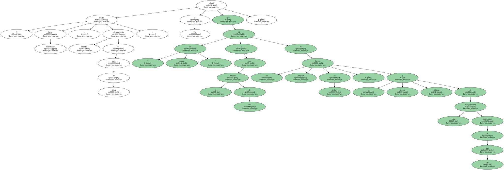El pasado 2 de agosto el Consejo Directivo de la Federación Internacional de Atletismo ( IAAF ) decidió reducir de dos años a uno la suspensión de Sotomayor , lo cual le ha permitido estar presente en la cita olímpica de la ciudad australiana.
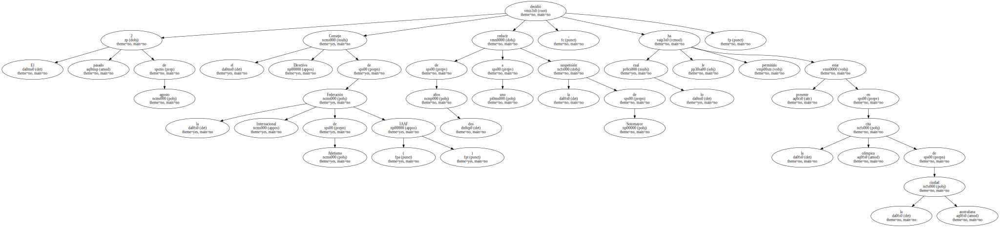El " salta nubes " cubano había dado positivo de cocaína en los Juegos Panamericanos de Winnipeg ( Canadá ) , según la Comisión Médica de la Organización Deportiva Panamericana ( ODEPA ) , que decidió despojarlo de la medalla de oro que había ganado en esa reunión atlética continental.
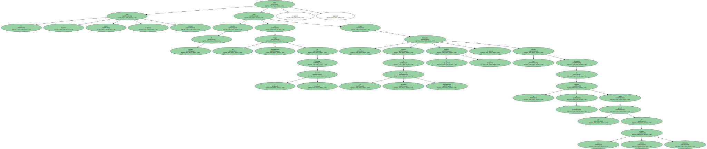" A pesar de todo esto que ha pasado , y aún cuando no hubiera ocurrido , mi objetivo en Sydney hubiera sido el mismo , o sea , el de ganar la medalla de oro " , afirmó a Efe en una entrevista en su residencia de la localidad habanera de Miramar.
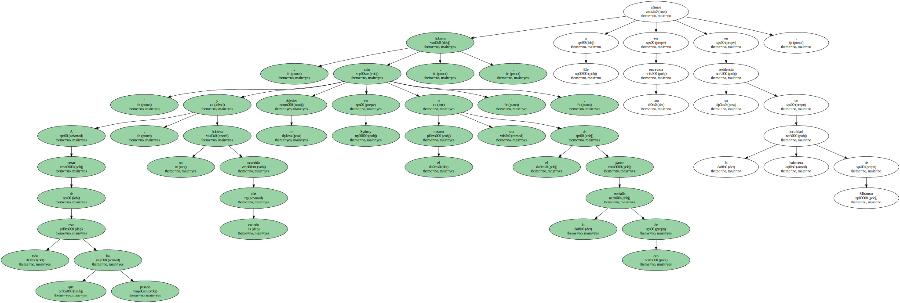" Creo que después de esto positivo que ha ocurrido , y a pesar del poco tiempo que queda para Sydney , la preparación va a ser mejor , no es que haya sido mala , pero a partir de ahora va a ser mejor " , pronosticó.
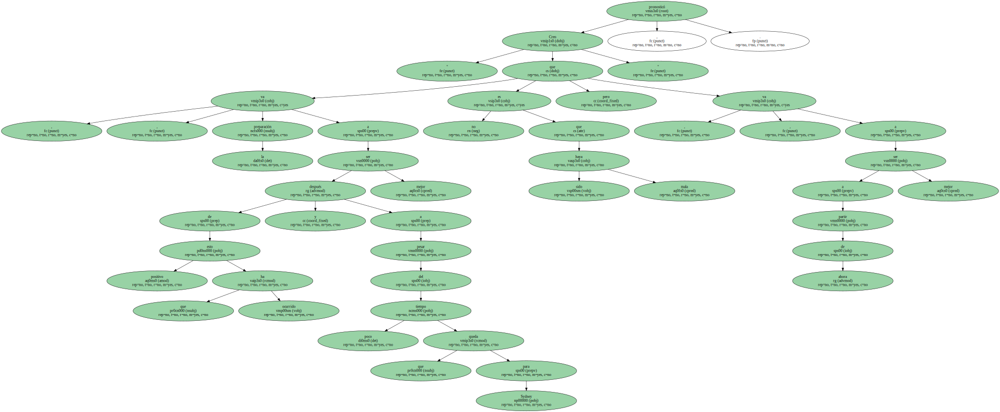" Sin duda mis intenciones son las de ganar la medalla de oro y creo que realmente tengo posibilidades de lograrlo " , apostilló el plusmarquista mundial de salto alto.

Afirmó que el mayor rival que podría tener en su empeño de colgarse al cuello el metal dorado es el ruso Viahceslav Voronin , que recientemente logró la mejor marca del año en la disciplina con un registro de 2.40 metros.
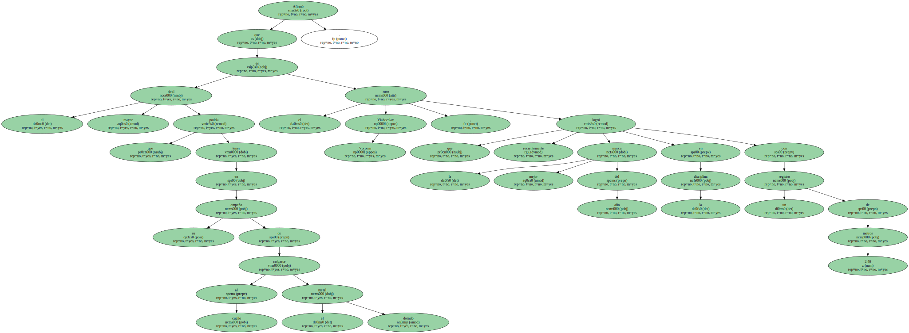Sotomayor indicó que hay saltadores hoy en día que están saltando sobre los 2.35 metros o los 2,37 , " pero el más estable este año ha sido el ruso Voroinin " , afirmó.
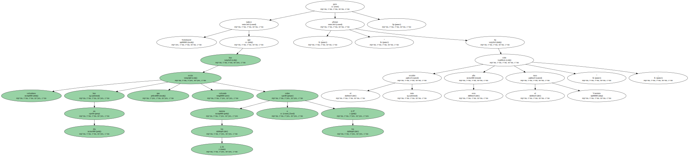" No obstante , por lo general trato de estar bien yo . En unos Juegos Olímpicos todos los rivales suelen ser fuertes , por eso insisto en tratar de estar bien yo . Si estoy mal y los otros bien , de nada sirvió , no puedo luchar , por eso trato de estar bien para luchar contra ellos " , señaló.
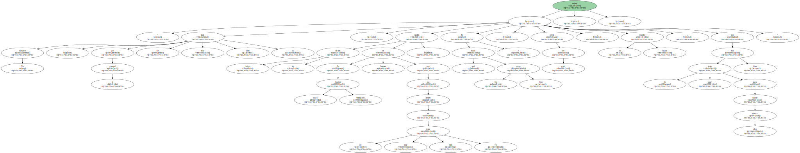" Pienso que para poder ganar la medalla de oro en Sydney habrá que saltar alrededor de los 2.37 metros " , vaticinó Sotomayor , y añadió que " hay saltadores con condiciones de hacerlo ".
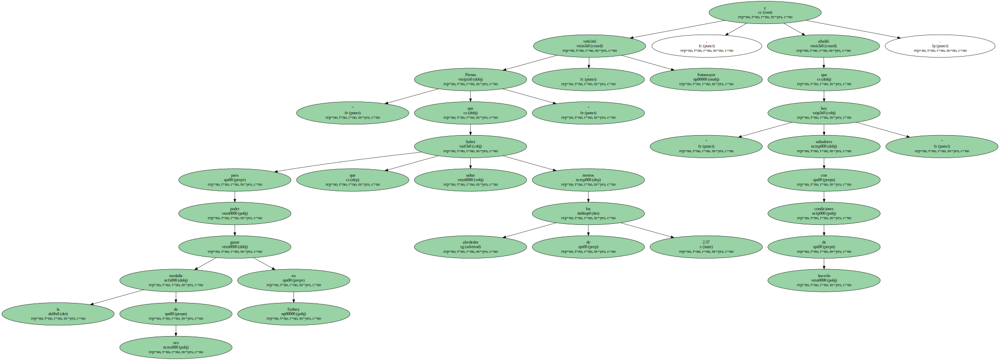Al referirse a su preparación , Sotomayor consideró que la misma " se encuentra en un nivel bastante alto ".

" Si de por ciento se tratara , diría que por lo menos está en un 90 por ciento ".
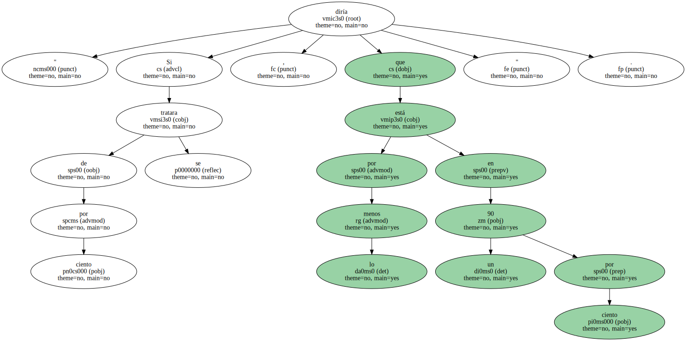" Mis intenciones antes de los Juegos de Sydney es competir en algunos torneos de manera previa para llegar a mi forma óptima , pero eso aún está por definir con mi entrenador en cuántas intervendría " , explicó a Efe.
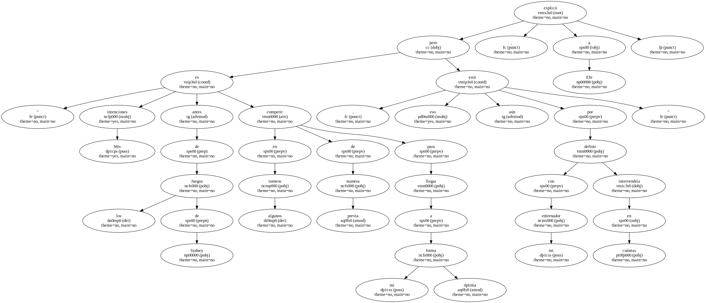Por otra parte , el saltador pronosticó que el atletismo cubano va a obtener resultados superiores a los conseguidos en los pasados Juegos Olímpicos de Atlanta`96.
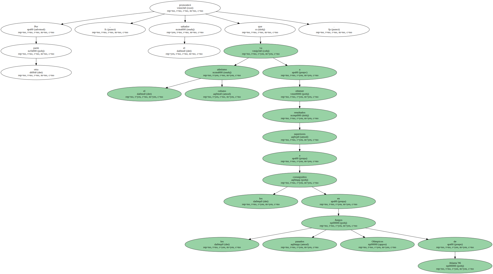" Queremos obtener por lo menos cuatro o cinco medallas de oro . Ese es nuestro objetivo y estamos en condiciones de hacerlo porque los pronósticos así lo demuestran , las marcas que han hecho mis compañeros hasta entonces " , dijo.
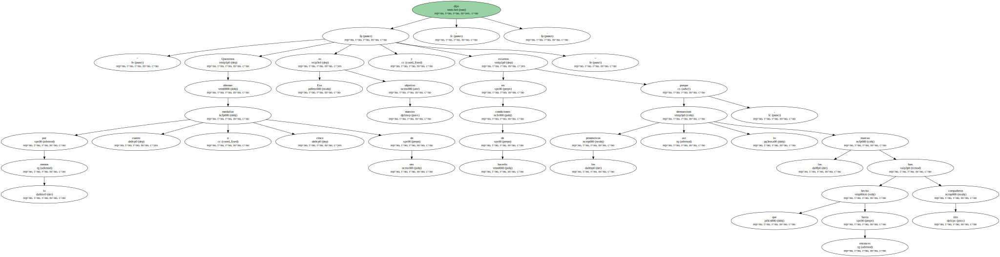Entre los atletas de mayores posibilidades de salir airosos en Sydney señaló a Iván Pedroso , a los vallistas Anier García y Daimí Pernía , a la jabalinista Osleydis Menéndez , así como también a los saltadores de triple.
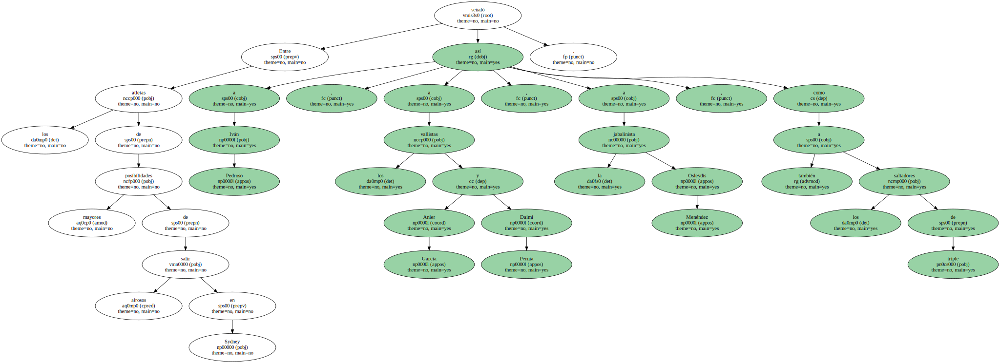Asimismo , el ídolo de Limonar vaticinó que Cuba , " sí está en condiciones de mantenerse entre los 10 primeros países , porque en sentido general creo que el deporte cubano está bien preparado y somos muchos los atletas que estamos bien ".
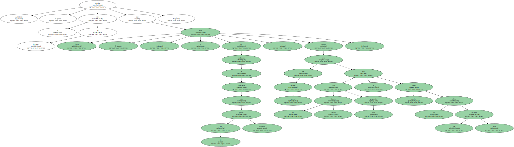" Creo que el mundo igual se ha preparado , por eso se nos pudiera hacer difícil , pero por lo que he podido apreciar la preparación de la delegación cubana está bastante bien y creo que sí se puede optar por esa posición " , sentenció.
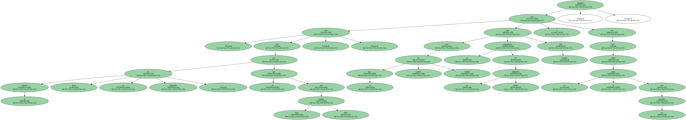Por último , el saltador cubano afirmó que tras concluir su preparación en los Juegos Olímpicos de Sydney " pienso mantenerme en el deporte en activo ".
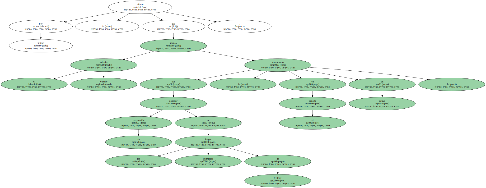" Sólo me retiraré cuando mis condiciones así me lo indiquen " , apostilló Javier Sotomayor.
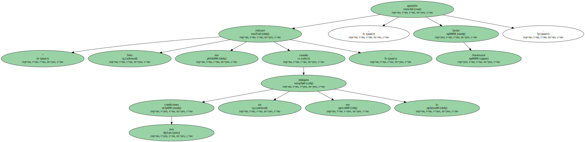